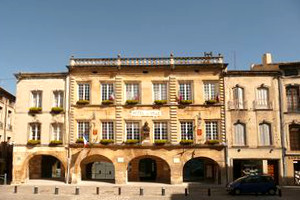
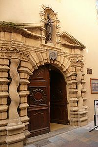
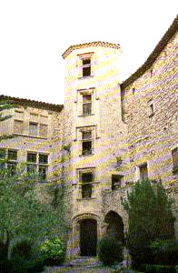
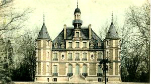
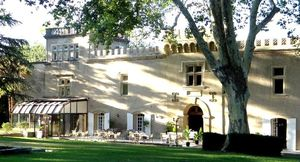
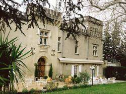
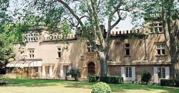
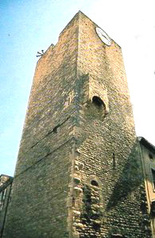

Recensement Jean-Claude Truffet
| Département | 30 — Gard |
| Canton | Bagnols sur Cèze |
| Commune | Bagnols-sur-Cèze |
| Type d'édifice | Château |
| Période d'origine | XV-XIX |








Trois châteaux à Bagnols-sur-Cèze, le château du Val-de-Cèze du XVIIe siècle, le manoir de Maransan du XV-XVIe siècles, et le château de Paniscoule. Pas d'information historiques sur ces deux derniers. BAGNOLS-sur-Cèze, en 1631, le duc de Montmorency, gouverneur du Languedoc et seigneur de Bagnols se révolte contre Louis XIII. Il est battu, condamné et exécuté. En signe de représailles, le Roi ordonne la démolition du château et des murailles de la ville, reconstruite au XVIIIe siècle pour se défendre d'éventuels assauts des Camisards. MARANSAN, au XVIe siècle Guillaume de Joyeuse, abbé des Chambons, au XVIII siècle, Monseigneur de Belzunce, évêque de Marseille et abbé de Chambons. Aujourd'hui propriété de monsieur Broche qui le restaure. PANISCOULE; situé aux abords du château du VAL de CEZE. Ces deux châteaux font partie de la même famille. En 1623, création de la gentilhommière raccrochée au château de Paniscoule, par un membre de la famille de Castries. En 1900, la comtesse de Castries meurt dans son château à Gaujac. Le château du Val de Cèze est alors vendu à Abel Sautel et son épouse qui en font une résidence dété. En 1930, leur fille se marie avec Paul Clap, chasseur alpin et plus tard apiculteur de Bagnols sur Cèze. En 1936, le jeune couple cède le domaine à leur voisine Jacqueline André-Thome. Sa fille Eléonore Patenôte épouse le baron Sapion du Roure de Beaujeu et en 1969 les descendants de Joseph Thome quittent le berceau familial. Seule Georgette Thome demeure au château. Le 7 Août François Brahin le transforme en hôtel et le rebaptise "Ventadous", propriété de monsieur Ali Garsallah, du XVIIe siècle transformé en hôtel restaurant, est implanté au sein de l'ancien repère de chasse du seigneur du château de Paniscoule.
Bagnols sur Céze, la mairie est situé dans un château. Château de Maransan, corps de logis central au nord à trois niveaux deux ailes en retour formant une cour autrefois fermé par un mur crénelé et portail. Dans l'angle intérieur une tour octogonal de quatre étages pour escalier à vis de style Renaissance, ce château resté longtemps à l'abandon, fut transformé en exploitation agricole. Val de Cèze du XVIIe siècle est implanté au sein de l'ancien repère de chasse, quadrilatère à deux niveaux flanqué de tours à trois niveaux carrées en angles, toitures à balustrades, créneaux sur façade avec pavillon saillant plein cintre crénelé, fenêtres à meneaux, le château du Val de Cèze porte la trace de nombreux siècles qui ont transformé sa construction primitive.
Paniscoule; du XIXe siècle, corps de logis rectangulaire à trois niveaux et attiques, toitures terminant par une tourelle centrale à clocheton, deux tourelles rondes en façade de même niveau sur les deux angles.
Famille de Castries
"
Patrimoine dans Bagnols sur Céze le château de Maransan du Val de Cèze et de la Paniscoule.